Jornales te ayuda a saber en todo momento a quién le debes, cuánto, y si ya le pagaste. También lleva la cuenta de lo que gastas en materiales, almuerzos y otras compras.
En la parte de abajo de la pantalla hay cinco pestañas:
| Pestaña | Para qué sirve |
|---|---|
| Debo | Lo que debes en total y a quién. Es la pantalla principal. |
| Actividades | Los días de trabajo que registraste, mes por mes. |
| Gastos | Las compras que no son mano de obra. |
| Resumen | Cuánto gastaste en la semana, el mes o las fechas que elijas. |
| Más | Trabajadores, tipos de tarea, categorías de gasto y respaldo. |
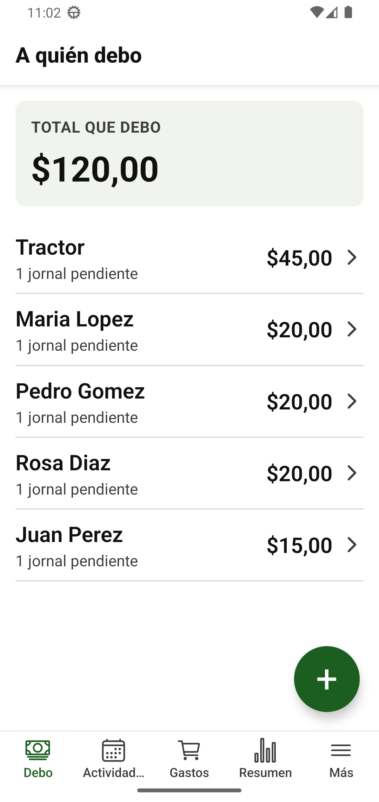
Esto se hace una sola vez. Después solo agregas a alguien cuando llega un trabajador nuevo.
Si alguien deja de trabajar contigo, ábrelo en la lista y toca Desactivar. Ya no aparece al registrar actividades, pero su historial se conserva. Puedes reactivarlo cuando quieras.
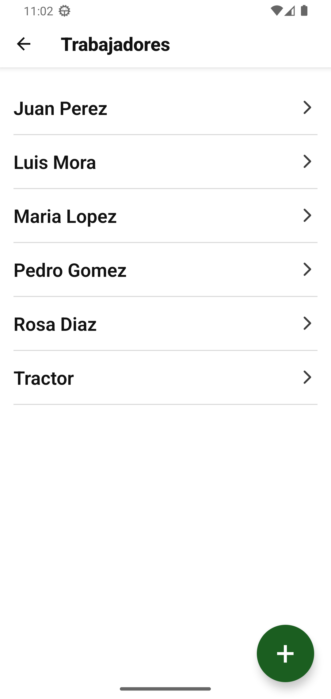
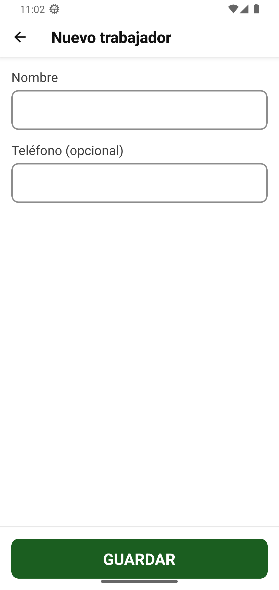
Un tipo de tarea guarda el precio que pagas normalmente, para no escribirlo cada vez.
Si después cambias la tarifa, los jornales que ya registraste no cambian. Solo se usa el precio nuevo en lo que registres desde ese momento.
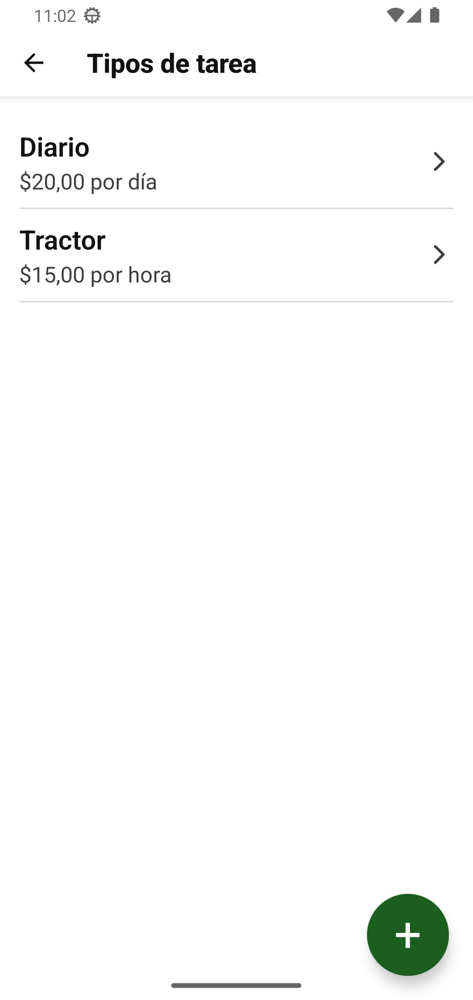
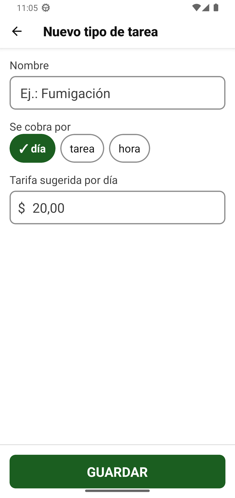
Cada vez que alguien trabaja, registras una actividad. Se hace en tres pasos y toma menos de un minuto, aunque sean varios trabajadores.
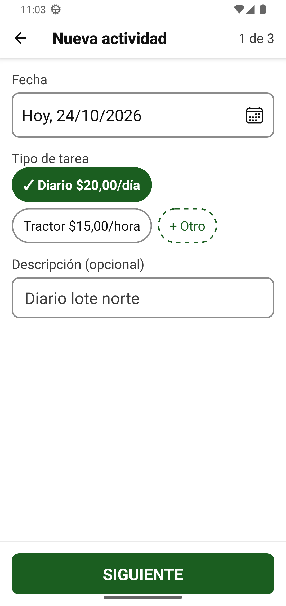
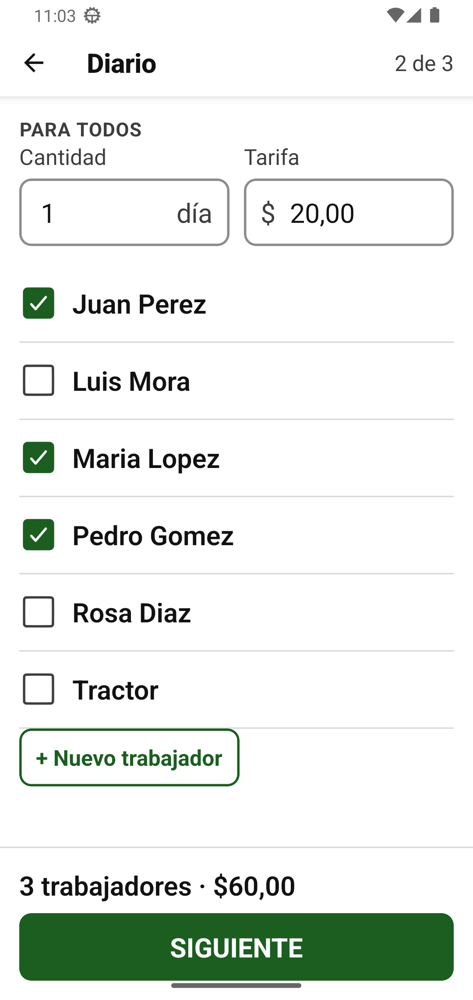
Ves lo que le vas a deber a cada uno y el total. Si todo está bien, toca GUARDAR.
Si a alguien le pagas distinto, toca el lápiz junto a su nombre (Ajustar), cambia su cantidad o su tarifa y toca Listo. Por ejemplo, si a una persona le pagas $25 en vez de $20, cambia su tarifa a 25. Si solo trabajó medio día, cambia su cantidad a 0,5.
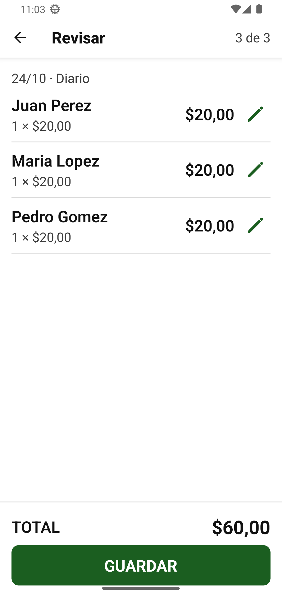
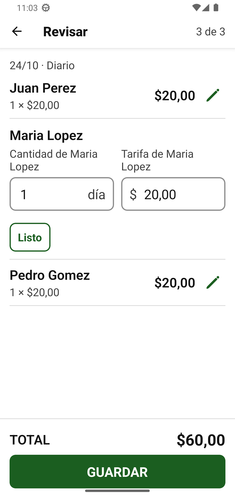
La pestaña Debo es la pantalla principal. Muestra:
Cuando le terminas de pagar a alguien, desaparece de la lista. Si no le debes a nadie, dice "No le debes a nadie".
Toca su nombre. Ves cuánto le debes, cada jornal pendiente y todos los pagos que ya le hiciste, con su fecha.
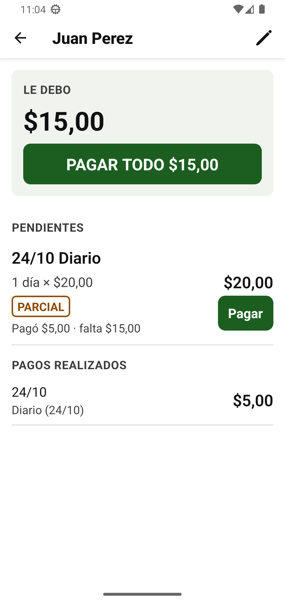
La deuda baja al instante. La app no deja pagar más de lo que se debe: si escribes de más, te avisa cuánto es lo máximo y no guarda nada.
Toca PAGAR TODO:
La app te muestra cuánto vas a registrar y te pide confirmar.
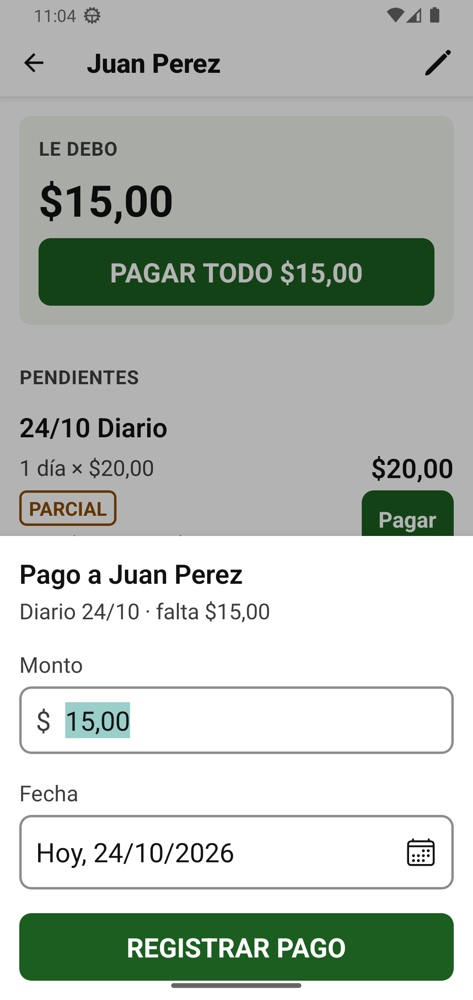
| Estado | Quiere decir |
|---|---|
| PENDIENTE | Todavía no le has pagado nada de ese jornal. |
| PARCIAL | Le pagaste una parte. Debajo dice cuánto pagó y cuánto falta. |
| PAGADO | Ya le pagaste todo ese jornal. |
En la pestaña Actividades están todos los días de trabajo del mes. Con las flechas de arriba cambias de mes. Toca una actividad para ver su detalle: lo que cuesta en jornales y gastos, cuánto se ha pagado y cuánto falta.
Solo se puede cuando ya no tiene jornales ni gastos. Quítalos primero; entonces aparece el botón Eliminar actividad al final del detalle.
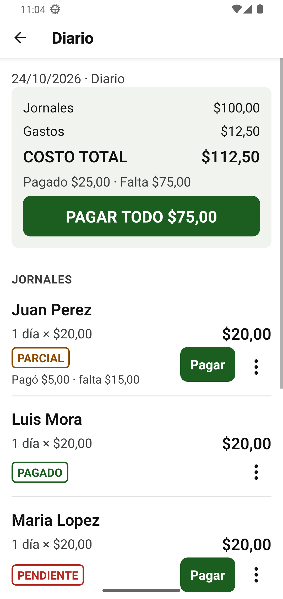
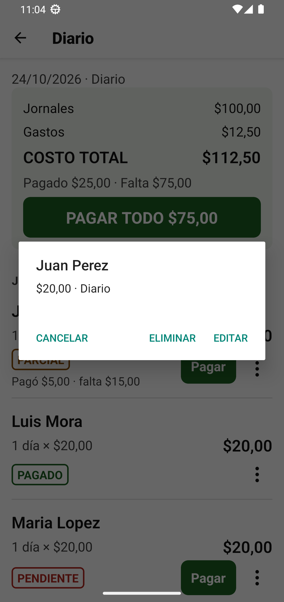
Aquí registras las compras que no son mano de obra: materiales, almuerzos, alquiler de maquinaria y otros.
También puedes agregar un gasto desde el detalle de una actividad, con + Agregar gasto.
Para corregir o borrar un gasto, tócalo en la lista.
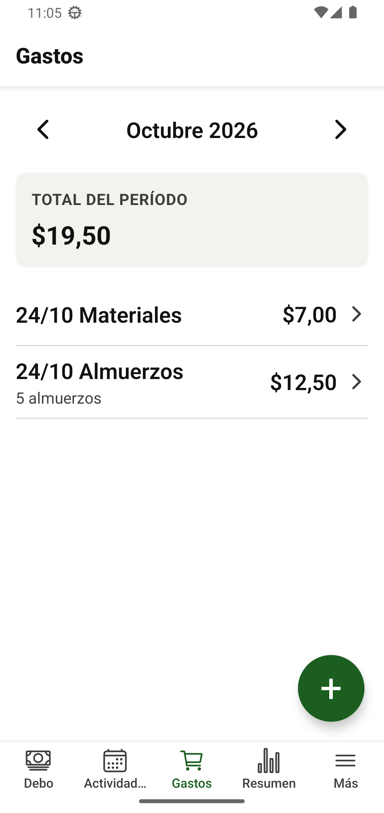
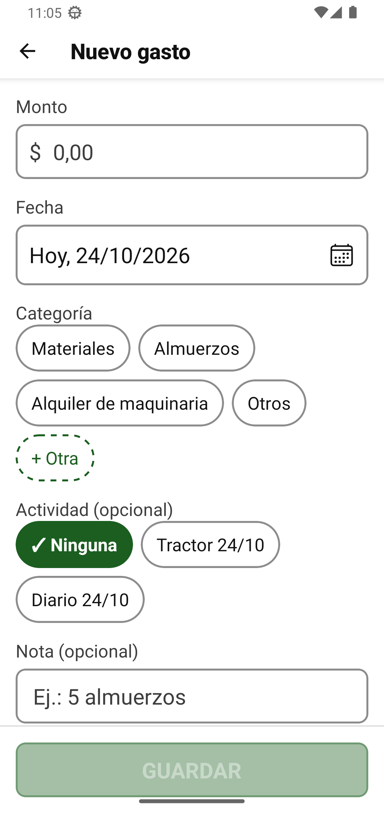
La pestaña Resumen te dice cuánto gastaste y en qué.
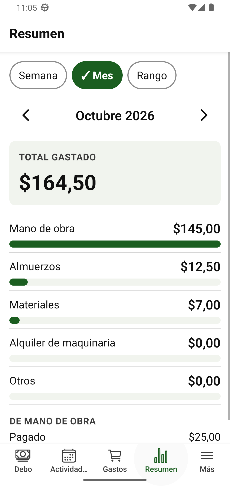
La pantalla muestra la fecha de tu último respaldo.
Cuando pasan 30 días sin respaldo, el celular te muestra una notificación: "Es hora de guardar el respaldo". Llega en la mañana, entre las 9 y las 10, y se repite cada día hasta que guardes uno. Tocarla te lleva a la pantalla de respaldo.
La primera vez que guardas un respaldo, Android te pide permiso para mostrar notificaciones. Toca Permitir para que te llegue el recordatorio.
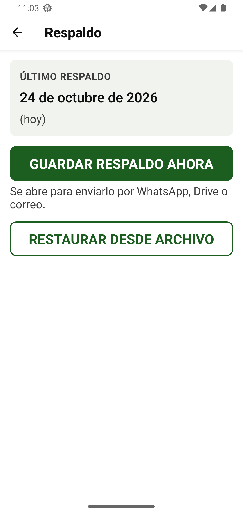
Sirve para pasar tus datos a un celular nuevo o recuperarlos después de un problema.
No. Todo funciona sin señal. Solo necesitas internet para enviar el respaldo por WhatsApp, Drive o correo.
Si es un jornal, ábrelo desde su actividad, toca los tres puntos (⋮) y luego Editar (sección 7). Si es un gasto, tócalo en la lista de Gastos.
Con coma: 12,50 es doce dólares con cincuenta centavos. Si es un valor entero, basta con 20.
La app no deja registrar un pago mayor a lo que se debe. Si registraste un pago con el monto equivocado, elimina el jornal (también se borran sus pagos) y vuelve a registrarlo.
No se borra: se desactiva (sección 3). Así no estorba en la lista y conservas lo que le pagaste.
A veces el teclado lo tapa. Baja el teclado con la flecha o el botón de atrás del celular y aparecerá.
Guarda un respaldo en el celular viejo, instala la app en el nuevo y restaura ese respaldo (sección 10).